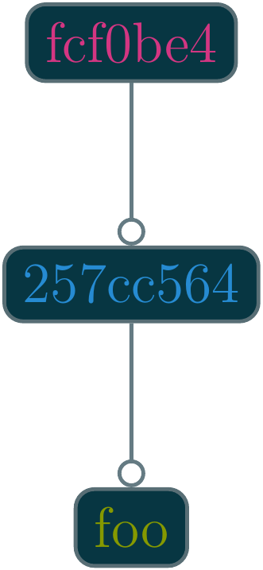
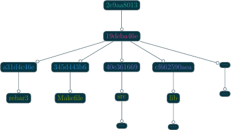
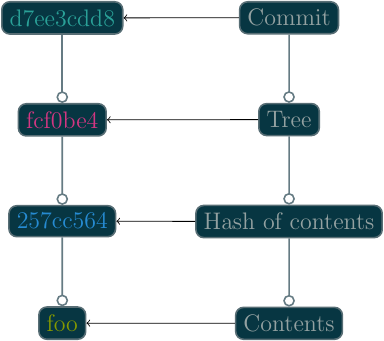
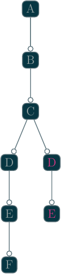
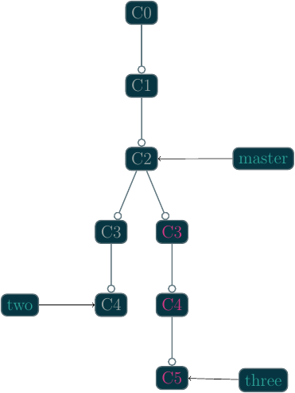
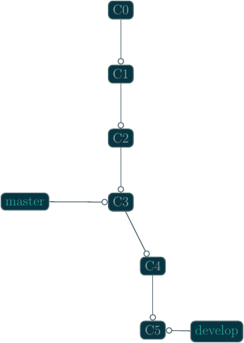
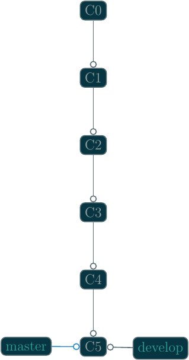
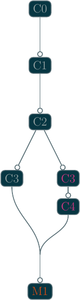

Learning Git in Reverse
Table of Contents
It is certainly counter-intuitive to learn to drive by first going backwards, so why learn how to use Git in reverse? The short answer is: knowing the internals of Git should make the commands and workflows of Git more accessible and understandable.
The content of this post is drafted from contents of a similarly titled presentation.
We will start by touring the plumbing commands and walk all the way through branching.
What is Git±

Figure 1: If that doesn't fix it, git.txt contains the phone number of a friend of mine who understands git. Just wait through a few minutes of 'It's really pretty simple, just think of branches as…' and eventually you'll learn the commands that will fix everything.
Git is a few things to many people, and creating a standard definition is our first step to fully understanding the nebulous Git.
Git, developed by Linus Torvalds, is a distributed version control system (DVCS). This means, Git is a tool for managing, typically, source code and its related versioning. It accomplishes this by creating a distributed acyclic graph of the code and folder structure and tracking the changes in the graph.
Git internally accomplishes this by using a key-value or content addressable filesystem. Git only knows how to store "objects". There is really no other real thing that Git is storing.
Plumbing
We will start by learning a few of the most basic plumbing commands of Git,
beginning with the git-hash-object(1) command:
Git Objects
Git objects are a zlib compressed binary file stored under the
.git/objects folder of any Git repository. They are typically created with
the git-hash-object(1) command are very basic in
content: several bytes of header information used by Git, type and size, and
the full contents of the file Git is storing.
For the majority of this post, we will be referencing objects created in a temporary repository:
$ cd /tmp $ git init foo $ cd foo
The
git-init(1)command creates a new local Git repository in the current directory or creates a new directory with a newly initialized Git repository.
After creating a new Git repository, let's examine its current contents:
± find .git .git .git/objects .git/objects/info .git/objects/pack .git/config .git/HEAD .git/hooks .git/hooks/post-checkout .git/hooks/post-commit .git/hooks/ctags .git/hooks/post-merge .git/hooks/post-rewrite .git/refs .git/refs/tags .git/refs/heads
We see that Git has created several folders and files for its internal usage.
We, as developers and users of Git, should generally never need to do anything
to these files, with a small exception for .git/hooks.
As noted before, .git/objects will be where Git will store all the objects
(source code and related) we create. .git/hooks are used for add custom
operations (white-space, conversions, ctags, etc.) to Git's
operation. .git/refs is where Git stores information about tags and
branches. .git/config is a file for local Git configuration options. This
file will store information about our repository and where it will go for
synchronization. .git/HEAD stores a reference to the working copy commit
hash.
With all this out of the way, we can now start creating objects.
git-hash-object(1)
We can start out by providing some content for
git-hash-object(1):
± echo 'foo' | git hash-object --stdin 257cc5642cb1a054f08cc83f2d943e56fd3ebe99
git-hash-object(1) typically expects filenames, so
we provide --stdin to tell it we are passing contents from the standard input
stream.
However, since we haven't told Git to store the contents, we have no objects
stored in the .git/objects folder. We will need to pass the -w flag to
git-hash-object(1) to tell Git to store the
contents.
± echo 'foo' | git hash-object -w --stdin 257cc5642cb1a054f08cc83f2d943e56fd3ebe99
Now, if we examine the .git/objects folder, we will see a new folder and a
new file:
± find .git/objects -type f .git/objects/25/7cc5642cb1a054f08cc83f2d943e56fd3ebe99
When Git stores objects, it splits the 40 character hash into two parts: the
first two characters and the last 38. The first two characters, in this case
25, as the folder, and the last 38, 7cc5642cb1a054f08cc83f2d943e56fd3ebe99,
as the file. The purpose of splitting the hash is to make indexing quicker.
Some of the original motivations for developing Git was a requirement of speed
and performance, can't manage decades of kernel history with a slow tool.
We can use another Git plumbing command to extract the contents of the object:
git-cat-file:
± git cat-file -p 257cc5642cb1a054f08cc83f2d943e56fd3ebe99 foo
Passing -p to git-cat-file tells Git to infer the type of the object.
Otherwise, we need to tell Git what the object is.
Moreover, because we know the objects are zlib compressed, we can use a tool
like zlib-flate or similar to peer inside the contents of the files
ourselves:
± cat .git/objects/25/7cc5642cb1a054f08cc83f2d943e56fd3ebe99 \ > | zlib-flate -uncompress blob 4foo
Here we see the metadata that Git uses itself, but is otherwise the contents we expect.
Perfect. We can store content in Git's object store and we can retrieve the contents. However, attempting to manage files in this way will be more taxing than any form of development. Furthermore, we don't have a way to store filenames yet. Thus, we will need a new type of object, trees.
Git Trees
Trees are objects.
Trees are similarly zlib compressed binaries of the internal data structure of
tracked folder structure of the repository. We create Git trees using the
git-update-index(1) and
git-write-tree(1) plumbing commands.
Since we have an object already added to the Git object store, we can go ahead and create a basic tree:
± git update-index --add --cacheinfo 100644 \
257cc5642cb1a054f08cc83f2d943e56fd3ebe99 foo.txt
± git write-tree
fcf0be4d7e45f0ef9592682ad68e42270b0366b4
Thus far, we have created two objects, one to store the contents of foo.txt
and another as the tree, which stores binding between the contents and the
filename for foo.txt.
Visually, this may look like something similar to the following image:

If we inspect the .git/objects directory, we should see a new object:
± find .git/objects -type f .git/objects/fc/f0be4d7e45f0ef9592682ad68e42270b0366b4 .git/objects/25/7cc5642cb1a054f08cc83f2d943e56fd3ebe99
As we expected, there is a new folder and new file, fc and
f0be4d7e45f0ef9592682ad68e42270b0366b4, respectively.
Since Git trees are actually objects, we can use the git-cat-file command
again to print out the contents of the tree:
± git cat-file -p fcf0be4d7e45f0ef9592682ad68e42270b0366b4 100644 blob 257cc5642cb1a054f08cc83f2d943e56fd3ebe99 foo.txt
That is, trees are objects where the contents of the object describes a folder
structure "tree". It uses 4 columns for each element of the tree where the
first number uses something similar to the Unix permissions octals; the second
defines the type of object, this can be either blob or tree; the third is
the hash of the object the entry points to; finally, the last element is the
filename of the object or folder name if the element is a tree.
A more complicated example of a Git tree may look like the following image:

Now we have file names and the ability to track folders, however, we are still managing and holding onto the checksums ourselves. Furthermore, we have no reference to who, when, why, or from where changes are being made. We need another object to store this information.
Git Commits
This will sound familiar: Git commits are … objects.
Git stores commits the same way it stores files and trees, as a
zLib compressed binary in the .git/objects folders. Similar
to trees, the contents of the object is specifically formatted, but they are
stored the same nonetheless. We can create commits using the
git-commit-tree(1) plumbing command.
The git-commit-tree(1) command takes a message, a
tree, and optionally a parent commit, and creates a commit object. If the
parent is not specified, it creates a root commit.
We have just created a tree, let's see what committing that tree looks like:
± echo 'our first commit' \ > | git commit-tree fcf0be4d7e45f0ef9592682ad68e42270b0366b4 d7ee3cdd8bfcc1b8c3f935302f2d2e78e69e4197
Notice, the hash returned here will be different. This hash is dependent on time and the author.
Inspecting our .git/objects store, we will see our new object:
± find .git/objects -type f .git/objects/d7/ee3cdd8bfcc1b8c3f935302f2d2e78e69e4197 .git/objects/fc/f0be4d7e45f0ef9592682ad68e42270b0366b4 .git/objects/25/7cc5642cb1a054f08cc83f2d943e56fd3ebe99
Similar to trees and files, we can use the git-cat-file command to inspect
the newly created commit object:
± git cat-file -f d7ee3cdd8bfcc1b8c3f935302f2d2e78e69e4197 tree fcf0be4d7e45f0ef9592682ad68e42270b0366b4 author kballou <kballou@devnulllabs.io> 1453219069 -0700 committer kballou <kballou@devnulllabs.io> 1453219069 -0700 our first commit
Breaking down this structure, we have 4 lines, the first line tells which tree this commit is saving. Since a tree already contains the information of all the objects that are currently being tracked, the commit only needs to save the root tree to be able to save all the information for a commit. The second and third line tell us the author and committer, often these will be the same. They will be different for GitHub pull requests, or in other situations where the author of the patch or change is different from the maintainer of the project. Finally, after a blank line, the rest of the file is reserved for the commit message; since "our first commit" message is short, it only takes a single line.

To inform Git that we have created a commit, we need to add some information to
a few files. First, we need create the master reference. We do this by
putting the full commit hash into a file called .git/refs/heads/master:
± echo d7ee3cdd8bfcc1b8c3f935302f2d2e78e69e4197 > .git/refs/heads/master
The next thing we should do is update the .git/HEAD file to point to our new
reference:
± echo 'ref: refs/heads/master' > .git/HEAD
This brings Git up to speed on everything we have done manually, similarly,
this is what Git does for us when we use the porcelain commands for managing
code. However, it's not really recommended to be manually touching these
files, and in fact, there is another plumbing command for updating these files:
git-update-ref(1). Instead of the two commands
above, we can use a single invocation of
git-update-ref(1) to perform the above:
± git update-ref refs/heads/master d7ee3cdd8bfcc1b8c3f935302f2d2e78e69e4197
Notice, git-update-ref(1) is an idempotent operation,
that is, if the reference has already been changed to the current hash, running
this command again will yield no change.
Before we get into the porcelain commands, let's walk through the motions again:
± echo 'bar' > bar.txt ± git hash-object -w bar.txt 5716ca5987cbf97d6bb54920bea6adde242d87e6 ± git update-index --add --cacheinfo 100644 \ > 5716ca5987cbf97d6bb54920bea6adde242d87e6 bar.txt ± git write-tree b98c9a9f9501ddcfcbe02a9de52964ed7dd76d5a
So far, we have added a new file, bar.txt with the contents of bar. We
have added the file to a new tree and we have written the tree to the object
store. Before we commit the new tree, let's perform a quick inspection of the
tree:
± git cat-file -p b98c9a9f9501ddcfcbe02a9de52964ed7dd76d5a 100644 blob 5716ca5987cbf97d6bb54920bea6adde242d87e6 bar.txt 100644 blob 257cc5642cb1a054f08cc83f2d943e56fd3ebe99 foo.txt
An entry for foo.txt is present in this new tree. Git is implicitly tracking
previous objects, and carrying them forward, we didn't have to do anything for
Git to do this. Furthermore, the only new objects in the object store so far
is the new object for the contents of bar.txt and the object for the new
tree:
± find .git/objects -type f .git/objects/b9/8c9a9f9501ddcfcbe02a9de52964ed7dd76d5a .git/objects/57/16ca5987cbf97d6bb54920bea6adde242d87e6 .git/objects/d7/ee3cdd8bfcc1b8c3f935302f2d2e78e69e4197 .git/objects/fc/f0be4d7e45f0ef9592682ad68e42270b0366b4 .git/objects/25/7cc5642cb1a054f08cc83f2d943e56fd3ebe99
Now, we can commit this new tree using the
git-commit-tree(1) command:
± echo 'our second commit' | git commit-tree \ > -p d7ee3cdd8bfcc1b8c3f935302f2d2e78e69e4197 \ > b98c9a9f9501ddcfcbe02a9de52964ed7dd76d5a b7fd7d75c1375858d8f355735a56228b3eb5e813
Let's inspect this newly minted commit:
± git cat-file -p b7fd7d75c1375858d8f355735a56228b3eb5e813 tree b98c9a9f9501ddcfcbe02a9de52964ed7dd76d5a parent d7ee3cdd8bfcc1b8c3f935302f2d2e78e69e4197 author kballou <kballou@devnulllabs.io> 1453229013 -0700 committer kballou <kballou@devnulllabs.io> 1453229013 -0700 our second commit
This commit should look very similar to the previous commit we created.
However, here we have a line dedicated to the "parent" commit, which should
line up with the commit passed to the -p flag of
git-commit-tree(1).
We can update the master reference, too, with the new hash:
± git update-ref refs/heads/master b7fd7d75c1375858d8f355735a56228b3eb5e813
Let's modify foo.txt and create another commit:
± echo 'foo 2' > foo.txt ± git hash-object -w foo.txt a3f555b643cbba18c0e69c82d8820c7487cebe15 ± git update-index -add --cacheinfo 100644 \ a3f555b643cbba18c0e69c82d8820c7487cebe15 foo.txt ± git write-tree 68b757546e08c1d9033c8802e4de1c0d591d90c8 ± echo 'our third commit' | git commit-tree \ > -p b7fd7d75c1375858d8f355735a56228b3eb5e813 \ > 68b757546e08c1d9033c8802e4de1c0d591d90c8 354c7435a9959e662cea02495957daa93d875899 ± echo 354c7435a9959e662cea02495957daa93d875899 > .git/refs/heads/master
This final example, we have gone from creating a file, adding the file to a
tree, writing the tree, committing the tree, and finally, pushing forward the
master reference.
There are a few more points to make before we go onto a brief tour of the porcelain commands.
Let's go ahead and inspect the current state of the object store:
± find .git/objects -type f .git/objects/35/4c7435a9959e662cea02495957daa93d875899 .git/objects/68/b757546e08c1d9033c8802e4de1c0d591d90c8 .git/objects/a3/f555b643cbba18c0e69c82d8820c7487cebe15 .git/objects/b7/fd7d75c1375858d8f355735a56228b3eb5e813 .git/objects/57/16ca5987cbf97d6bb54920bea6adde242d87e6 .git/objects/b9/8c9a9f9501ddcfcbe02a9de52964ed7dd76d5a .git/objects/d7/ee3cdd8bfcc1b8c3f935302f2d2e78e69e4197 .git/objects/fc/f0be4d7e45f0ef9592682ad68e42270b0366b4 .git/objects/25/7cc5642cb1a054f08cc83f2d943e56fd3ebe99
There's a few things to notice here, every object we have created so far is
still in the object store, the first version of foo.txt is still there
(257cc5642...). All the trees are still there, and of course the commits are
still around. This is because Git stores objects. It does not store computed
differences or anything of the sort, it simply stores the objects. Other
version control systems may store the patches, individually version files, or
even track file renames. Git does none of this. Git simply stores only the
objects you ask, it doesn't store the differences between any files, it doesn't
track that a file was renamed. Every commit points to the exact version of
every file at that point in time. If a difference between the working file
and the stored version is asked for, it's computed, if a difference between
yesterday's version of a file and today's, it's computed. If a file was
renamed, it can be inferred by a similarity index and computing the difference
between Git trees. This achieves tremendous performance gains because
computing text differences is relatively cheap compared to attempting to manage
code patches as a means of versioning.
Porcelain
Now that we have gone through our tour of the plumbing commands and Git
internals, we can start actually use Git. It will be very rare that the
typical user of Git will ever be using any of the plumbing commands above or
touching files under the .git folder in their day-to-day work. For the
day-to-day usage of Git, we will be using the "porcelain" commands, the
commands that take the arduous steps above, and turn them into a pleasant walk
in the park. Essentially, everything we have done above can be accomplished
with two (2) commands in Git: git-add(1) and
git-commit(1).
Let's initialize a new temporary repository for demonstration:
$ cd /tmp $ git init bar $ cd bar
After initializing the repository, we can add a file, say, foo.txt:
± echo 'foo' > foo.txt
Next, we can use the git-add(1) command to stage the file to
be tracked:
± git add foo.txt
Next, we can use the git-commit(1) command to commit the
newly created foo.txt file:
± git commit -m 'initial commit'
Everything we have done so far is now achieved with these two commands. We have stored the contents of the file, created a tree, and committed the tree.
There are a few more commands that are very useful to using Git on a regular
basis: git-clone(1), git-status(1),
git-log(1), git-pull(1),
git-push(1), and git-remote(1).
git-clone(1)
Before you can contribute to a project, you need your own copy of the
repository, this is where we would use git-clone(1). As
we have seen before, we can create new repositories with
git-init(1), but we still need a means of getting existing
work from another source.
Here's an example of using git-clone:
$ git clone git://github.com/git/git.git ...
There are several protocols that can be used for the when cloning, listed here in order of preference:
SSH- Bi-directional data transfer
- Encrypted
- Typically authenticated, especially without passwords
Git- Pull only
- Intelligent transfer mechanism
HTTP/S- Bi-directional data transfer
- Authenticated
- Unintelligent transfer mechanism
File
git-status(1)
Often, you will need to know the state of the current repository, and the go-to
command to view the current state of the repository is the
git-status(1) command. It will give you information
about the currently modified files, the currently untracked files, the branch
you're one, if the branch is tracked upstream, it will let you know if you have
something to push, etc.
git-log(1)
git-log(1) is used to check the history of the repository.
Using git-log(1) with a few arguments, you can get a pretty
concise image of how your projects are changing.
Some commonly used options you might use might be:
--stat: Show the files and number of changes for each commit--oneline: Show each commit on a single line--summary: Show condensed summary of header information
git-pull(1) and git-fetch(1)
git-pull(1) is used to pull remote changes into your
current working copy. I prefer not use git-pull(1) because
I find it to be slightly harmful. Instead,
I use either git-fetch(1) or a form of
git-remote(1).
git-fetch(1) is a similar command used for "fetching"
remote changes, but does not attempt to automatically merge them into the local
branch.
git-push(1)
git-push(1) will send your changes to the remote location.
By default, this command will not attempt to overwrite the remote if the
changes cannot be applied with a "fast-forward" merge operation.
git-remote(1)
git-remote(1) is an overall "remote" management command.
It allows you to add remotes, rename remotes, and even fetch information about
remotes. "Remotes" are non-local/upstream sources of changes. The remote
"origin" is the default name for the remote of a clone. This could be a
co-worker's repository or it could be the central repository of the project.
With the git-remote(1) command, we can add a new remote:
± git remote add upstream proto://remote
We can rename a remote:
± git remote rename origin upstream
And my favorite, we can fetch changes from the remote:
± git remote update -p origin
I use this last command so much, in fact, I have created an alias in my
~/.gitconfig file:
[alias]
up = !git remote update -p
This way, I can decide when and how I want to merge the upstream work into my local copy.
The above commands along with git-add and git-commit will cover the
majority of Git related tasks, as far as simple, non-branching workflows are
concerned.
For more advanced usage of Git, we can continue to learn about code branching, git branches, and merging techniques.
Branches
Git branches are actually a very simplistic concept in both implementation and intuition. Code and applications versioned by any version control tool have their implicit branching points: when one user commits code that another user isn't yet made aware, the code has diverged from a single path of existence to multiple paths. This is a form of implicit branching and explicit branching isn't much different.

The structure of Git makes branching trivial, in fact, all that's required is
to create a file that marks the branch point of the code. That is, to create a
file under .git/refs/heads that contains the branch's base commit hash. From
there, the code can safely move forward without changing anything of the other
branches.

Branching in Git is accomplished with git-branch(1) and
git-checkout(1).
The basic form of git-branch(1) is the following:
± git branch {branch_name} [optional branch point]
If the branch point is not specified, git-branch(1)
defaults to the HEAD reference.
Once the branch is created, you can switch to it using the
git-checkout(1) command:
± git checkout {branch_name}
Moreover, if you're going to be creating a branch and immediately switching to
it, you can use the -b flag of git-checkout(1) to do
these two steps in one:
± git checkout -b {branch_name} [optional branch point]
Merging
Once you're ready to merge your changes from one branch into another branch,
you can use the git-merge(1) command to accomplish that.
There are a few different ways Git can merge your work between two branches. The first Git will try is called "fast-forward" merging, where Git will attempt to play the source branch's commits against the target branch, from the common history point forward.


However, this can only be accomplished if the target branch doesn't have any changes of its own.
If the target branch does have changes that are not in the source branch, Git
will attempt to merge the trees and will create a merge commit (assuming all
went well). If a merge conflict arises, the user will need to correct it, and
attempt to re-apply the merge, the resolution of the merge will be in the merge
commit. For more information on merging, see the
git-merge(1) documentation.

Summary
Git is not the most complicated version control system out there, and I hope peering into the internals of Git demonstrates that fact. If anything, it may seem that Git is very simplistic and unintelligent. But this is actually what gives Git its power. It's simplistic (recursive) object storage is what gives Git super powers. Git can infer file renames, branching is trivial, merging is similarly easier, the storage and tree model are well understood concepts and the tree and graph algorithms are well studied.
However, this simplistic approach to storage also has a few problems. Tracking binary files tends to be expensive because Git isn't storing the difference, but each version of the file in its entirety. The zlib compression library also isn't always amazing at compressing binary files either.
Beyond these problems, Git is a very powerful and capable source control tool.